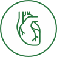

Сердечно-сосудистая система
-
Квантовая эндовазальная терапия (КЭТ)

-
Лечебный метод, использующий лазерное излучение в качестве действующего фактора. Метод, основанный на
воздействии энергии кванта света на кровь. КЭТ стимулирует регенерацию молекул крови, что благотворно
влияет на биохимические и физиологические процессы. В результате воздействия лазерного светового потока
наблюдается улучшение состояния как отдельных органов и тканей, так и организма в целом.
-
Большая аутогемотерапия
- Большая аутогемотерапия с озоно-кислородной смесью (БАГТ) – метод, при
котором определенный объем цельной крови пациента смешивается со смесью О2/О3; ректальные инсуфляции
газовой озоно-кислородной смеси; подкожное введение озоно-кислородной газовой смеси; использование
озонированного масла для аппликаций.
-
Внутривенное введение озонированного физраствора
-
Ксенонотерапия
-
Современный метод лечения, основанный на применении инертного газа ксенона (Xe) высокой степени очистки.
Ксенон абсолютно безвреден для организма, нетоксичен, не вызывает аллергических реакций и не имеет
противопоказаний. Основными клиническими эффектами ксенонотерапии являются: нормализация сна, улучшение
настроения после процедуры, снятие невротических и неврозоподобных состояний, повышение
работоспособности и жизненного тонуса, устранение синдрома хронической усталости, купирование болевых
синдромов, в том числе мигреней, улучшение функции сердечной мышцы и головного мозга.
-
Гипокситерапия
- Метод лечения, профилактики и реабилитации, основанный на применении
газовой смеси с пониженным содержанием кислорода, но при обычном давлении. В ходе процедуры пациент
поочередно дышит такой смесью и обычным воздухом. В результате возникает эффект гипоксической гипоксии,
что и оказывает лечебный эффект.
-
Спектральная фототерапия (СФТ) на проекцию органов
-
Данный метод доставки необходимых микроэлементов к пораженному органу с помощью мультиспектральной
энергии света сочетает принципы фототерапии и рефлексотерапии. Лечебный эффект достигается за счет
насыщения организма определенными микро- и макроэлементами, которые участвуют во всех обменных
процессах,
обеспечивая нормальное функционирование организма.
-
Консультации врачей-специалистов
-
Кардиолог, сомнолог, гирудолог.
-
Кардиологический check-up
- Комплексное обследование сердечно-сосудистой системы рекомендовано при
наличии жалоб со стороны сердечно-сосудистой системы, при отягощенной наследственности по
сердечно-сосудистым заболеваниям (гипертоническая болезнь, ИБС, ОНМК, другие заболевания сердца и
сосудов), для динамического контроля, коррекции терапии при уже имеющихся хронических
сердечно-сосудистых заболеваниях, а также людям в возрасте 40 лет и старше.
-
УЗИ сердца
-
Ультразвуковое исследование сердца или эхокардиография – это метод исследования анатомии сердечной мышцы
с помощью ультразвуковой волны.
-
Триплексное сканирование брахиоцефальных артерий (ТС БЦА)
-
Позволяет оценить состояние сосудов: геометрию артерий, их проходимость, определить наличие стенозов,
извитостей, перегибов, атеросклеротических бляшек, наличие тромбозов и окклюзий, выявить аномалии
развития артерий; оценить кровоток по каждому исследуемому сосуду, а также рассчитать общий мозговой
кровоток, что чрезвычайно важно для подбора лекарственной терапии.
-
Холтеровское мониторирование ЭКГ и артериального давления
-
Метод расширенной диагностики работы сердечно-сосудистой системы. В процессе холтеровского
мониторирования
данные об электрической активности сердца записываются длительно (как правило, в течение суток).
Учитываются данные о частоте сердцебиений, ритме сердечных сокращений, наличии или отсутствии нарушения
сократимости сердечной мышцы. Суточное (холтеровское) мониторирование ЭКГ и/или АД позволяет выявить:
нарушение ритма, блокады сердца, признаки нарушения кровоснабжения сердца, ишемию миокарда (сердечной
мышцы), гипертонию (повышение цифр АД) и гипотонию (снижение цифр АД), причины обморочных состояний,
нарушения сердечной деятельности в условиях повседневной активности (при обычной и повышенной физической
и/или эмоциональной нагрузках). Исследование, проводимое на фоне приема препаратов, позволяет подобрать
более точную дозировку препаратов для лечения патологии сердечно-сосудистой системы.
-
УЗИ артерий и вен конечностей
-
Позволяет оценить состояние сосудов: геометрию артерий, их проходимость, определить наличие стенозов,
извитостей, перегибов, атеросклеротических бляшек, наличие тромбозов и окклюзий, выявить аномалии
развития артерий, оценить кровоток по каждому исследуемому сосуду.
-
Респираторный мониторинг Somnocheck.
-
Исследование дыхательной системы во время ночного сна. Позволяет диагностировать осложненный храп,
остановки дыхания во сне, снижение концентрации кислорода в крови. Процедура проводится с применением
легкой диагностической системы, позволяющей проводить полное обследование нарушений дыхания и храпа во
время ночного сна пациента. Дополнительно аппарат позволяет регистрировать различные виды
микропробуждений, чтобы установить наличие или отсутствие нарушений структуры сна.
-
Программа «Общее оздоровление»
-
Это комплекс лечебно-профилактических мероприятий, направленных на укрепление иммунитета, восстановление
природных сил и улучшение работы основных регуляторных систем организма. Последовательное и
взаимосвязанное выполнение процедур, включенных в программу, гармонизирует физиологический баланс,
улучшает общее состояние пациента, повышает жизненный тонус и устойчивость к негативному влиянию внешних
факторов.